08/07/2018 — Tự kiểm tra: bao nhiêu giờ từ lúc bạn chẩn đoán OMI đến khi đạt tiêu chuẩn STEMI?
Bản dịch tiếng Việt của bài "Test yourself: how many hours between your diagnosis of OMI and positive STEMI criteria?" – Dr. Smith’s ECG Blog. Giữ nguyên toàn bộ 17 hình ảnh của bản gốc.
Tác giả: Pendell Meyers, Steve Smith biên tập
Một bệnh nhân nam ở độ tuổi đầu 40 đến khám vì đau ngực/đau bụng từng cơn. Ông kể đã có nhiều cơn trong hai ngày qua, bao gồm một cơn vài giờ trước khi đến viện, được mô tả là dữ dội (8/10), cảm giác “nóng rát” sau xương ức, không lan, kèm vã mồ hôi, được mô tả như “cảm giác thức ăn bị mắc ở cổ họng” hoặc “như thể tôi ăn quá nhanh”, nhưng không liên quan đến ăn uống, đỡ khi ợ hơi và trung tiện, đỡ khi nằm thẳng. Cơn đau vào ngày đến viện cũng tương tự, chỉ khác là có thêm các đặc điểm mới là “nóng ran hai tai” và “nhìn mờ”, khiến cuối cùng ông phải đến khoa cấp cứu (ED). Tiền sử có bệnh động mạch vành (CAD) đã biết (lần thông tim trước đây hai năm cho thấy hẹp 60% LAD đoạn giữa và hẹp 60% nhánh chéo thứ 1), cũng như bệnh động mạch vành khởi phát sớm ở một số người thân gần.
Khi được đánh giá tại khoa cấp cứu, ông cho biết cơn đau đã hết hoàn toàn ngay trước khi đội cấp cứu ngoài viện (EMS) đến.
Đây là điện tâm đồ đầu tiên của ông tại khoa cấp cứu (không có điện tâm đồ cũ để so sánh):

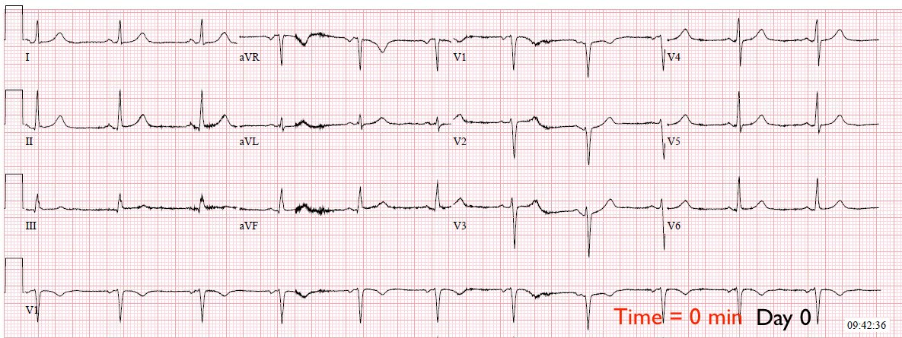
Tôi sẽ không áp dụng công thức phân biệt OMI thành trước kín đáo với tái cực sớm cho điện tâm đồ này, vì các công thức đó không được thiết kế cho những ca không có ST chênh lên (STE) (tái cực sớm, còn gọi là “ST chênh lên biến thể bình thường”, ngụ ý rằng có STE).
Nếu đây là ca của tôi ở thời điểm tiến cứu, tôi sẽ không nhận ra OMI vào lúc này. Điều này được củng cố bởi việc bệnh nhân không đau ngực tại thời điểm ghi điện tâm đồ, nhiều khả năng có nghĩa là các thay đổi điện tâm đồ (nếu có trong lúc đau) đang hồi phục. Tôi sẽ cố gắng lấy bất kỳ điện tâm đồ nào do EMS ghi được, chỉ định ghi các điện tâm đồ liên tiếp mỗi 30 phút trong suốt thời gian bệnh nhân ở khoa cấp cứu, và dặn dò kỹ bệnh nhân (và tốt nhất là cả vợ hoặc người nhà nếu có mặt) về tầm quan trọng của việc báo ngay cho nhân viên y tế khi có BẤT KỲ triệu chứng nào có thể là tái phát. Tôi cũng sẽ ghi điện tâm đồ ngay lập tức nếu cảm giác khó chịu tái phát.
Bệnh nhân vẫn không đau trong thời gian ở khoa cấp cứu, troponin ban đầu không phát hiện được, và được nhập viện để tiếp tục loại trừ hội chứng vành cấp (ACS).
Ba lần troponin liên tiếp (không phải loại độ nhạy cao) đều không phát hiện được. Nghiệm pháp gắng sức được chỉ định cho ngày hôm sau. Không ghi điện tâm đồ liên tiếp nào.
Ngày 1, 0650: Báo cáo điều dưỡng ghi rằng bệnh nhân bị “ợ nóng” tái phát. Đã cho Pepcid và maalox, và không ghi nhận thêm triệu chứng nào. Không ghi điện tâm đồ vào lúc này.
Bình luận: Đây là một sai lầm. Một bệnh nhân được nhập viện vì cảm giác khó chịu có thể có nguồn gốc thiếu máu cục bộ. Ông được nhập viện vì nghi ngờ thiếu máu cục bộ do mạch vành. Cảm giác khó chịu đã hết. Nhưng khi nó tái phát, lại không ghi điện tâm đồ.
Hơn nữa, cũng không chỉ định thêm xét nghiệm troponin nào vào lúc đó. Điều này cũng không thể chấp nhận được, không thể giải thích được, và tiếc thay tôi tin rằng (dù không có bằng chứng xác thực) đây là chuyện thường gặp ở nhiều cơ sở y tế. Chính những thói quen thực hành như thế này là lý do chúng tôi chủ trương rằng ngay cả các trường hợp tắc thoáng qua cũng phải được chụp mạch vành cấp cứu, bởi đơn giản là không có đơn vị nào trong bệnh viện đủ tin cậy để theo dõi tình trạng tắc lại, với những thói quen thực hành chuẩn và trình độ đọc điện tâm đồ chuẩn như hiện nay.
Lý tưởng nhất, bệnh nhân có nguy cơ thiếu máu cục bộ tái phát nên được theo dõi đoạn ST liên tục bằng 12 chuyển đạo. Xem các ca sau:
1. Why we need continuous 12-lead ST segment monitoring in Wellens’ syndrome (Vì sao chúng ta cần theo dõi đoạn ST liên tục bằng điện tâm đồ đủ chuyển đạo trong hội chứng Wellens)
2. Wellens’ syndrome, no culprit, what happened? (Hội chứng Wellens, không có tổn thương thủ phạm, chuyện gì đã xảy ra?)
Ca bệnh tiếp diễn
Cơn đau của ông dường như tự hết, và sáng hôm đó ông được làm nghiệm pháp gắng sức hình ảnh regadenoson/sestamibi/SPECT, cho thấy “khuyết tưới máu lớn liên quan đến mỏm, vùng dưới-mỏm, vùng trước-mỏm, vách vùng mỏm và thành trước đoạn giữa.” Theo báo cáo, không ghi nhận thay đổi điện tâm đồ nào trong lúc làm nghiệm pháp gắng sức.
Kết quả này xác nhận bệnh nhân đang bị thiếu máu cục bộ cơ tim ở vùng chi phối của LAD và có một vùng rất lớn có nguy cơ nhồi máu, hoặc đang nhồi máu, hoặc đã nhồi máu. Riêng điều này lẽ ra đã đủ để chụp mạch vành cấp cứu.
Có vẻ kết quả này đã khiến nhóm điều trị lên lịch chụp mạch vành vào ngày hôm sau (không rõ vì sao họ chọn không chụp mạch vành ngay lập tức).
Ngày 1, 2230: Báo cáo điều dưỡng ghi rằng bệnh nhân bị “đau ngực tái phát bắt đầu lúc 10:30 tối sau khi với tay lên quá đầu để nâng đầu giường lên.” Dấu hiệu sinh tồn gần nhất trước khi khởi phát đau ngực tái phát gồm tần số tim 84 và huyết áp 146/72, sau đó dấu hiệu sinh tồn đo lại trong lúc đau ngực là tần số tim 145 và huyết áp 200/102.
Một xét nghiệm troponin khác được gửi đi, và điện tâm đồ được ghi ngay lập tức:

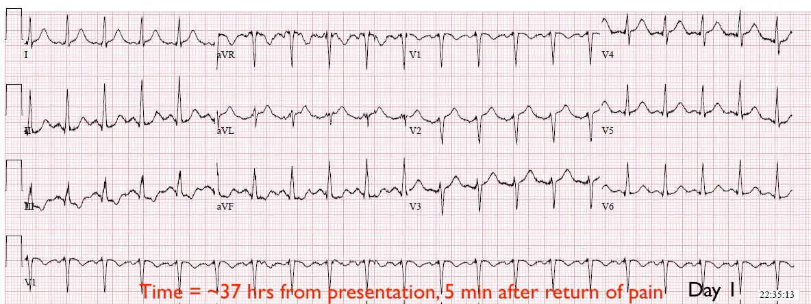
Dr. Smith thường nói rằng nhịp nhanh nên khiến bạn hoài nghi chẩn đoán OMI, trừ khi bệnh nhân đang sốc tim. Ca này KHÔNG phải là ngoại lệ của quy tắc đó, dù bệnh nhân có huyết áp tăng. Ở một bệnh nhân không có đủ thể tích nhát bóp (trong ca này là do rối loạn vận động thành do thiếu máu cục bộ trên diện rộng), cách duy nhất để duy trì cung lượng tim là bù lại bằng cách tăng tần số tim. Phải coi như bệnh nhân này đang sốc tim. Không có ghi nhận nào về siêu âm tại giường trong thời gian này, không có ghi nhận về tưới máu ngoại vi hay dấu hiệu phù phổi cấp. Bệnh nhân đang sốc tim.
Thành trước giờ đây hoàn toàn mất tưới máu và đang nhồi máu!
Nhưng điều này đã không được nhận ra, dường như vì nó không đạt tiêu chuẩn STEMI.
Troponin T lúc 22:30 trả kết quả không phát hiện được.
Có vẻ như họ đã quy cơn đau ngực của ông trong vài giờ tiếp theo là do huyết áp và tần số tim tăng (tần số tim 120-130 và huyết áp 170-190/75-90).
Cơn đau vẫn kéo dài, và một điện tâm đồ khác được chỉ định:

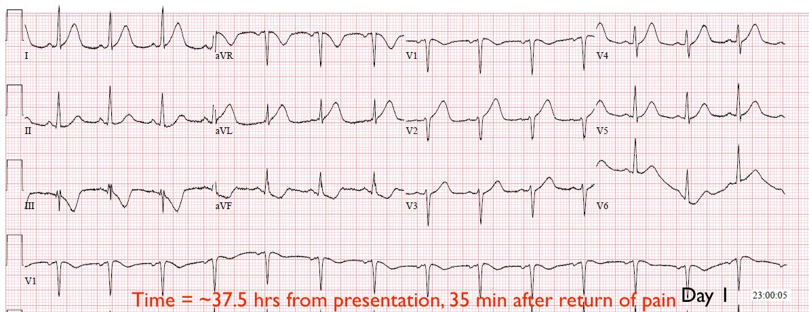
Ông được dùng nitroglycerin nhiều lần, có cải thiện từng lúc trong suốt đêm, nhưng nhìn chung cơn đau vẫn kéo dài. Khoảng 4:20 sáng, cơn đau nặng lên và lan ra tay trái, lúc đó điện tâm đồ ghi lại này được thực hiện:

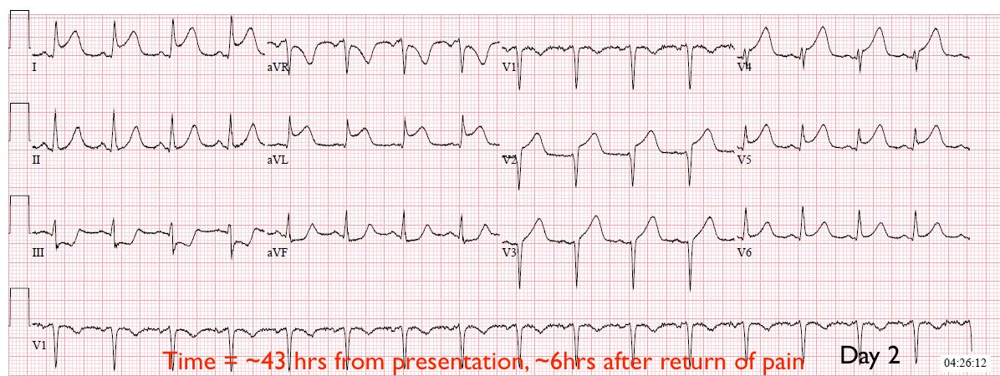
Troponin T lặp lại vào lúc này trả kết quả 0,13 ng/mL (tăng nhẹ). Phòng thông tim (cath lab) cuối cùng được kích hoạt lúc 4:45 sáng (~6,5 giờ sau điện tâm đồ chẩn đoán đầu tiên).
Hình ảnh thông tim của ông được trình bày dưới đây:

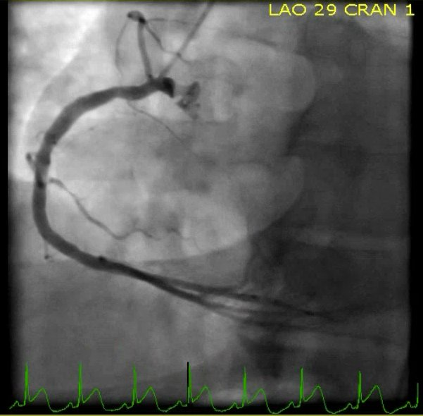

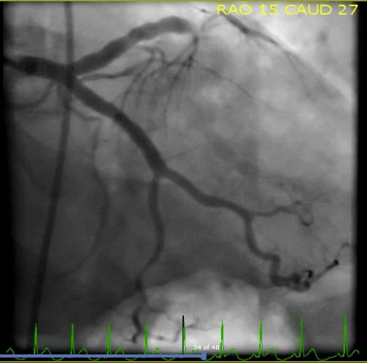

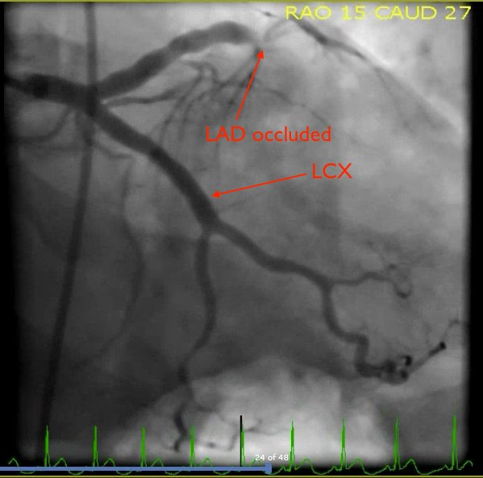

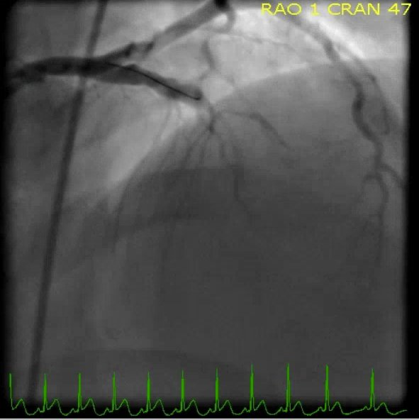

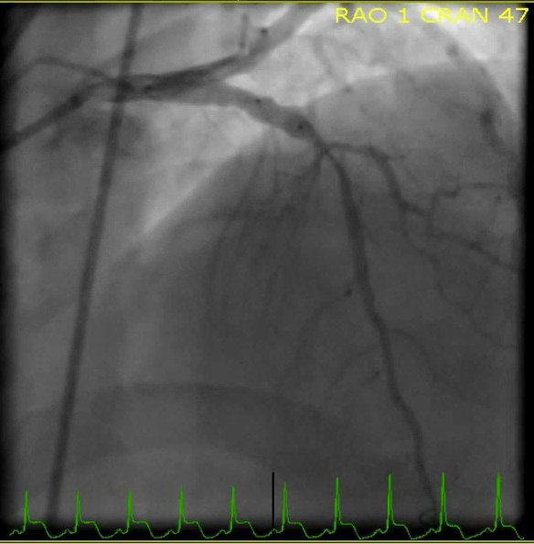

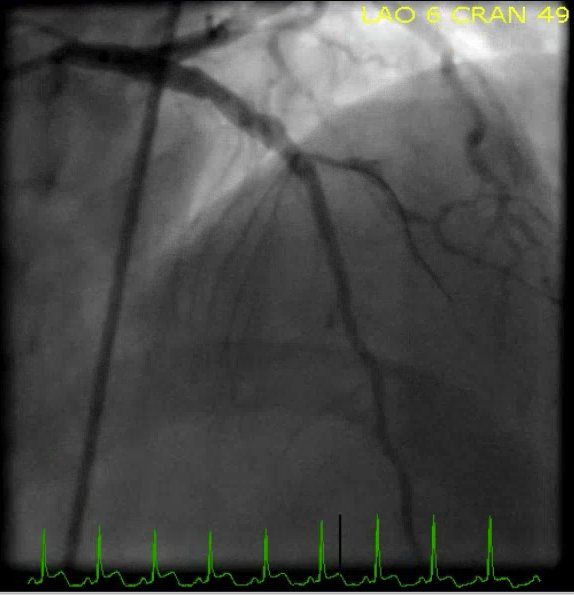
Dòng chảy TIMI được cải thiện lên 3 sau can thiệp, và cơn đau ngực của bệnh nhân hết.
Điện tâm đồ ghi lại sau thông tim:

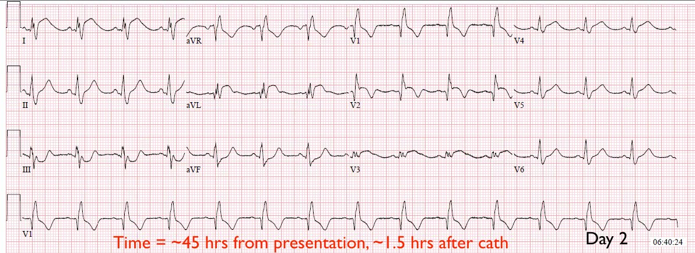
Xem bài này: Poor Microvascular Reperfusion (“No Reflow”): Best Diagnosed by ECG (Tái tưới máu vi mạch kém (“Không tái lưu”): chẩn đoán tốt nhất bằng điện tâm đồ)
Một lần ghi lại khác vào cuối ngày hôm đó:

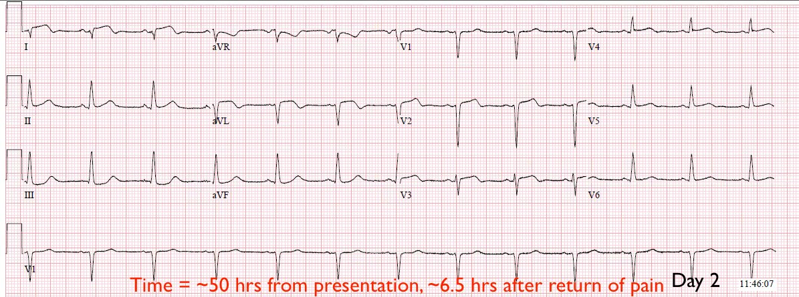
Hãy xem sơ đồ diễn tiến OMI của chúng tôi dưới đây và so sánh các điện tâm đồ của ca này với diễn tiến đó, để khắc sâu kiến thức của bạn về diễn tiến của OMI thành trước dẫn đến hình thái phình thất trái!

Trong 10 giờ tiếp theo sau thông tim, troponin T đạt đỉnh 4,67 ng/mL (nhồi máu cơ tim diện rộng).
Siêu âm tim lặp lại cho thấy rối loạn vận động thành (WMA) rộng ở thành trước và vùng mỏm, phân suất tống máu (EF) 45%.
Đây là điện tâm đồ ghi lại của ông 1 tháng sau:

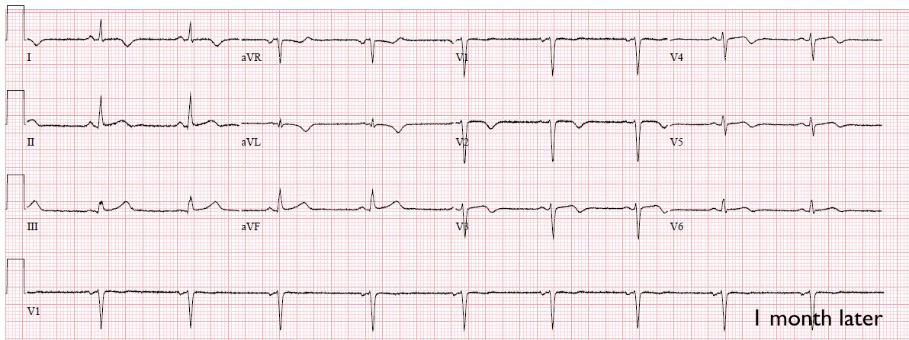
Hãy cùng nhắc lại một số trong rất nhiều vấn đề của ca này:
1) Khi bệnh nhân có triệu chứng tái phát, không ghi điện tâm đồ cũng không đo troponin.
2) Nhóm điều trị đã bỏ qua kết quả bất thường của nghiệm pháp gắng sức.
3) Khi cuối cùng họ ghi lại điện tâm đồ trong lúc triệu chứng tái phát, bản ghi có giá trị chẩn đoán OMI nhưng không đạt tiêu chuẩn STEMI. Điều này dẫn đến chậm trễ ít nhất 6,5 giờ trong điều trị tắc mạch vành cấp.
Những điểm cần học:
1) Troponin T thế hệ hiện hành (contemporary) (và có lẽ nhiều xét nghiệm tương tự khác) sẽ không dương tính cho đến ít nhất 4-6 giờ sau khởi phát tắc mạch vành cấp kéo dài. Ngược lại, troponin tăng không phân biệt được OMI với các bệnh lý khác. Troponin không nên có vai trò gì trong chẩn đoán OMI, trừ khi bạn vừa không thể học đọc điện tâm đồ và vừa không ngại để bệnh nhân nằm trên giường với cơn đau ngực dữ dội như bị đè nghiến và một LAD tắc hoàn toàn trong 6 giờ mà không can thiệp.
2) Ca này là một ví dụ tuyệt vời cho thấy đau thắt ngực không ổn định vẫn còn tồn tại và hiện diện rõ ràng. Có 4 lần troponin ban đầu không phát hiện được ở một bệnh nhân có triệu chứng và có huyết khối trong LAD. Đây là đau thắt ngực không ổn định đã tiến triển thành nhồi máu cơ tim xuyên thành trước hoàn tất, nhiều khả năng kèm hậu quả lâu dài nặng nề. Cho rằng đau thắt ngực không ổn định đã là chuyện của quá khứ là một ngộ nhận. Xem bài này:
Unstable Angina: Dr. Braunwald asks if it is time for a Requiem (Đau thắt ngực không ổn định: Dr. Braunwald hỏi phải chăng đã đến lúc cử hành lễ cầu hồn)
Vì những ca như thế này và một khối lượng lớn y văn ủng hộ, chúng tôi đã đề xuất cử hành lễ cầu hồn cho mô hình STEMI/NSTEMI thay vì cho đau thắt ngực không ổn định. Để biết thêm, xem Tuyên ngôn OMI (the OMI Manifesto).
3) Tiêu chuẩn STEMI thường bỏ sót OMI, và trong nhiều trường hợp như ca này, thời gian chờ cho đến khi đạt tiêu chuẩn STEMI gây ra sự chậm trễ can thiệp không thể chấp nhận được, trong thời gian đó toàn bộ thành tim bị ảnh hưởng có thể bị mất. Cách duy nhất để nhận diện OMI một cách nhất quán và sớm nhất có thể là học cách đọc điện tâm đồ ở trình độ chuyên gia.
4) Điện tâm đồ xác nhận tái tưới máu chính xác hơn dòng chảy TIMI trên phim chụp mạch vành. (Mức tưới máu cơ tim TIMI hay mức ngấm thuốc cơ tim (“blush”) là một thước đo trên chụp mạch về tưới máu vi mạch, tương quan rất chặt chẽ với các thước đo tái tưới máu trên điện tâm đồ)
5) Bạn phải nắm vững diễn tiến của OMI và các đặc điểm của hình thái phình thất trái để tránh kích hoạt dương tính giả và âm tính giả cho bệnh nhân này trong tương lai.

———————————————————–
Bình luận của KEN GRAUER, MD (8/7/2018):
———————————————————–
Bài blog xuất sắc của Dr. Meyers & Dr. Smith. Tôi sẽ nhấn mạnh thêm một vài điểm:
- Bệnh sử trong ca này là then chốt. Bệnh nhân ở độ tuổi 40, và ông có bệnh mạch vành đã biết, đã được chứng minh qua lần thông tim trước. Ông đã có nhiều cơn trước đó trong 2 ngày trước khi nhập viện — với cơn đau ngực không dưới 8/10 xảy ra vài giờ trước khi cuối cùng ông đến khoa cấp cứu. Trong bối cảnh bệnh sử đáng lo ngại này ở một bệnh nhân có bệnh mạch vành đã biết — tôi đã không đọc điện tâm đồ ban đầu của ông là bình thường (Điện tâm đồ phía trên trong Hình 1).

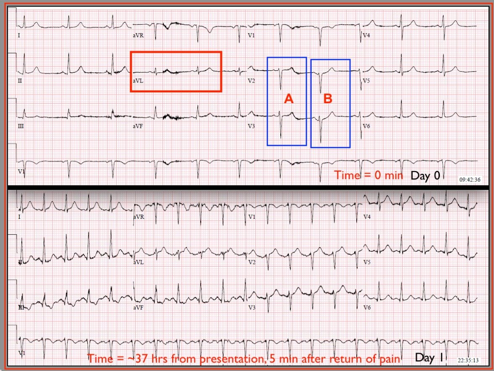
Tầm quan trọng của bệnh sử khi diễn giải các thay đổi điện tâm đồ không bao giờ có thể nhấn mạnh cho đủ. Rõ ràng, điện tâm đồ ban đầu (Phía trên trong Hình 1) không có giá trị chẩn đoán OMI (nhồi máu cơ tim liên quan đến tắc cấp — acute Occlusion-related MI). Nhưng chuyển đạo aVL (trong hình chữ nhật MÀU ĐỎ) cho thấy đoạn ST thẳng hơn bình thường dẫn lên một sóng T trông vừa cao hơn vừa phình to hơn mức đáng có ở đỉnh, xét đến biên độ rất nhỏ của sóng R ở chuyển đạo này.
- Khi đó chúng ta phải tự hỏi phức bộ nào trong 2 phức bộ ở chuyển đạo V2 và V3 là “phức bộ thật” ở các chuyển đạo này — “A” hay “B”? Do trôi đường nền — chúng ta không thể biết QRS “thật” ở các chuyển đạo này trông như thế nào. Dù vậy — cả “A” và “B” đều không hoàn toàn bình thường. Ở A — đoạn ST lại thẳng, trong khi lẽ ra phải dốc lên nhẹ nhàng rồi hòa dần vào sóng T. Ở B — sóng T ở V3 trông như có thể cao hơn mức đáng có xét đến sóng r rất nhỏ ở chuyển đạo này. Dù hoàn toàn thừa nhận rằng không điều gì tôi mô tả ở trên mang tính khẳng định chắc chắn — ở một bệnh nhân mà bạn BIẾT có bệnh mạch vành, và người đó kể với bạn rằng ông vừa có một cơn đau ngực dữ dội 8/10 chỉ vài giờ trước — bản ghi PHÍA TRÊN trong Hình 1 vừa không đạt yêu cầu về kỹ thuật, vừa (theo ý kiến của tôi) — đòi hỏi phải ghi lại điện tâm đồ trong vòng 20-30 phút tiếp theo.
- Tôi đoán rằng đã có một điện tâm đồ được ghi tại hiện trường vào lúc bệnh nhân liên lạc với EMS. Chúng ta được cho biết bản ghi của EMS này “không có sẵn”. Nhiều khả năng NẾU điện tâm đồ tại hiện trường đó có sẵn để so sánh với điện tâm đồ ban đầu tại khoa cấp cứu — thì đã có thể thấy thay đổi liên tiếp. Điểm cần nhấn mạnh là ở những bệnh nhân có bệnh mạch vành đến viện với triệu chứng dao động — sự hiện diện của thay đổi điện tâm đồ động có giá trị chẩn đoán thiếu máu cục bộ cấp. Thường thì điều này đã đủ là chỉ định thông tim, bất kể có hay không có “tiêu chuẩn stemi”.
- Như Dr. Meyers đã nêu — không ghi điện tâm đồ nào vào Ngày #1 @ 06:50 khi bệnh nhân bị “ợ nóng” tái phát. Điểm cần nói là bất kỳ thay đổi nào về triệu chứng ở một bệnh nhân có bệnh mạch vành đã biết được nhập viện vì đau ngực đều bắt buộc phải ghi lại điện tâm đồ.
- Như Dr. Meyers đã nêu — điện tâm đồ thứ 2 (Bản ghi phía dưới trong Hình 1) rõ ràng chỉ điểm OMI — nhưng dường như đã không được xử trí vì “nó không đạt tiêu chuẩn STEMI”. Điểm cần nói là có những thay đổi sóng ST-T động (thực ra là khá ngoạn mục!) đã xảy ra giữa thời điểm ghi 2 điện tâm đồ trong Hình 1 — và chính điều đó là chỉ định thông tim cấp bất kể có hay không có “tiêu chuẩn stemi”.
- Tôi không thấy lý do xác đáng nào để làm nghiệm pháp gắng sức cho bệnh nhân này. Nếu có sẵn điện tâm đồ của EMS — hoặc nếu điện tâm đồ thứ 2 được ghi kịp thời hơn (thay vì đợi 37 giờ) — gần như chắc chắn đã thấy được thay đổi điện tâm đồ động — và điều đó lẽ ra đã đủ để thúc đẩy thông tim cấp. Lý do để cân nhắc nghiệm pháp gắng sức ở bệnh nhân này không phải là để xác định có bệnh mạch vành hay không — vì điều đó đã được chứng minh. Và, vì đã có triệu chứng dao động cùng với thay đổi điện tâm đồ động — chừng đó lẽ ra là tất cả những gì cần thiết để biện minh cho việc thông tim kịp thời. Tôi khó mà hình dung được bất kỳ kết quả nghiệm pháp gắng sức nào có thể khiến tôi từ bỏ kết luận đó …
BÌNH LUẬN: Những ca khiến ta phải tự vấn như ca này thật khó! Đó là một trong những lý do tôi luôn cố gắng đánh giá ca bệnh (và các điện tâm đồ kèm theo) trước khi đọc diễn biến xảy ra. Chính vì thế tôi hoàn toàn thừa nhận rằng thật dễ dàng để phán xét sau khi mọi chuyện đã rồi, từ chiếc ghế bành thoải mái trước máy tính của mình. Nhưng điều quan trọng là học hỏi từ những sai lầm đã mắc, với mục tiêu làm tốt hơn trong lần tới.
- Chúng ta ai cũng đang học hỏi mọi lúc … Cảm ơn Dr. Meyers & Dr. Smith đã trình bày ca bệnh khiến ta phải tự vấn này.